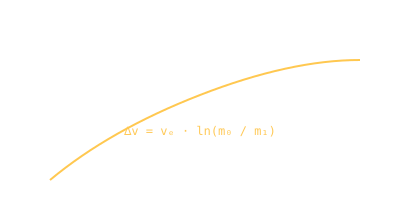

Tsiolkovsky Equation · 1903
A deaf Russian schoolteacher works out the rocket equation 50 years before anyone could build a rocket to use it.

101 · zoom in
Konstantin Tsiolkovsky was a self-taught provincial schoolteacher in Kaluga, deaf since childhood from scarlet fever, who spent his evenings sketching multi-stage rockets while teaching arithmetic by day. In 1903 he published "The Investigation of Space by Means of Reactive Devices" in an obscure Russian journal — and worked out the equation that would govern every rocket ever built.
The Tsiolkovsky equation: ∆v = vₑ × ln(m₀/m₁). The change in velocity a rocket can produce equals its exhaust velocity times the natural log of its mass ratio. That natural-log term is brutal — getting more ∆v requires exponentially more fuel. Most of every rocket is fuel. The Saturn V was 85% propellant by mass.
Tsiolkovsky also figured out: liquid fuels would beat solids; multi-staging was necessary to escape Earth; orbital stations could host humans permanently. He died in 1935, two years before Goddard's first liquid-fuel test reached real altitude.
Tsiolkovsky published the equation, the multi-stage rocket concept, and the orbital-station concept years before serious rocket engineering existed. Goddard would build the first liquid-fuel rocket in 1926 (US); von Braun's V-2 in 1942 (Germany); Korolev's R-7 in 1957 (USSR).
The equation is the inverse of Newton's third law: every kilogram of propellant ejected at velocity vₑ pushes the vehicle by 1 kg × vₑ. Integrate that over decreasing mass and you get the natural-log dependence.
Why log scale matters: doubling ∆v needs the mass ratio squared. Tripling needs cubed. To get from 0 to escape velocity (~11.2 km/s) with a typical chemical exhaust velocity of 4.4 km/s, mass ratio = e^(11.2/4.4) ≈ 13. So a 1-tonne payload needs 12 tonnes of propellant, plus the structure to hold it.
Tsiolkovsky never tested anything. He wasn't an engineer — he was a theoretician with chalk. The Soviet space programme posthumously canonised him; his Kaluga house is now a museum and his name is on the far-side crater the lunar Soviets aimed at.
SEE IN THE APP
- /missions Every ∆v budget on every mission card is a Tsiolkovsky calculation